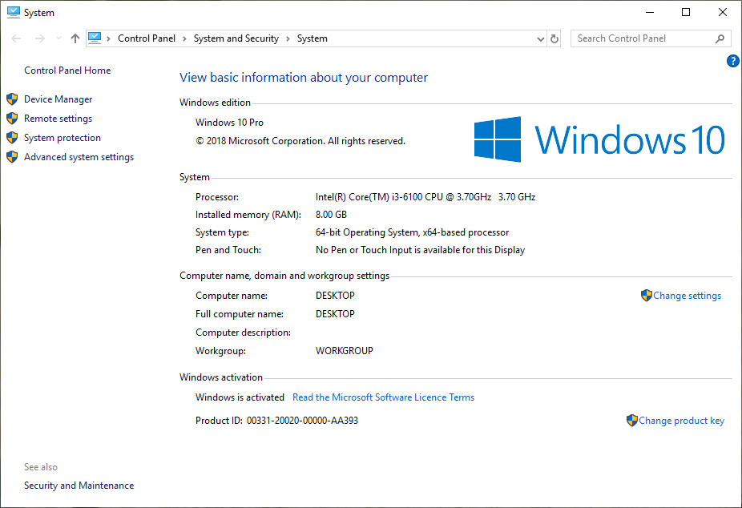

EVKey là phần mềm gõ tiếng Việt có dấu được download nhiều nhất, tải miễn phí, gọn nhẹ, ổn định, dễ sử dụng, nhiều tính năng, tương thích với mọi Windows (Win 10, Win 8, Win 7) 32 bit, 64 bit.
| Kiểu đánh | sắc | huyền | hỏi | ngã | nặng | mũ | móc | trăng | đ |
|---|---|---|---|---|---|---|---|---|---|
| TELEX | s | f | r | x | j | aa | ow | aw | dd |
| VNI | 1 | 2 | 3 | 4 | 5 | 6 | 7 | 8 | 9 |
| VIQR | ' | ` | ? | ~ | . | ^ | + | ( | dd |
| Kiểu đánh | VD: Gõ tiếng Việt thật dễ dàng với EVKey |
|---|---|
| TELEX | Gox Tieengs Vieetj thaatj deex dangf vowis EVKey |
| VNI | Go4 Tie61ng Vie65t tha65t de64 da2ng vo71i EVKey |
| VIQR | Go~ Tie^'ng Vie^.t tha^.t de^~ da`ng vo+'i EVKey |
Kiểu gõ Telex được ưa thích sử dụng ở miền Bắc vì thuận tiện, gõ nhanh, dễ nhớ và dễ dùng. Trong khi đó kiểu gõ VNI (kết hợp với các phím số 0-9) lại được sử dụng phổ biên ở miền Nam.
Nếu bạn chọn bỏ dấu sớm (hay bỏ dấu kiểu cũ) bộ gõ sẽ bỏ dấu (sắc, huyền, hỏi, ngã, nặng) ngay trên nguyên âm đầu tiên ( ví dụ: hòa, tỏa, thúy, thủy...). Về mặt mỹ thuật, kiểu bỏ dấu sớm sẽ tạo sự cân đối, đẹp mắt cho các từ tiếng Việt. Ngược lại khi chọn bỏ dấu muộn, bộ gõ sẽ bỏ dấu tiếng Việt trên nguyên âm cuối cùng của từ ( ví dụ: hoà, toả, thuý, thuỷ...). Bạn nên thống nhất một kiểu bỏ dấu khi soạn thảo văn bản trên Windows vì nó sẽ liên quan tới thứ tự sắp xếp (chẳng hạn như khi sắp xếp danh sách theo họ tên).
Phần mềm EVKey là một trong những phần mềm tự do mã nguồn mở dùng để gõ tiếng Việt (go tieng Viet - Vietnamese) được phát hành và sử dụng hoàn toàn miễn phí
Bộ gõ tiếng Việt EVKey mới nhất có thể cài đặt trên hệ điều hành Windows (Win 10, Window 8, Win 7...) và được cập nhật liên tục khi có phản hồi của người dùng
Ứng dụng EVKey được phát hành theo giấy phép GNU General Public License version 2.0 (GPLv2). Điều đó có nghĩa là phần mềm EVKey được phân phối miễn phí, tự do. Có thể tải EVKey và cài đặt để đánh tiếng Việt dễ dàng
Các tính năng vượt trội của EVKey so với các phần mềm khác
Ngoài những chức năng cơ bản và thêm một số chức năng đặc biệt, thì EVKey là một bộ gõ tiếng Việt hoàn toàn đầy đủ những chức năng cần thiết như những phần mềm gõ Tiếng Việt khác trên thị trường.
Bộ gõ tiếng Việt EVKey các phiên bản từ EVKey có giao diện khá đơn giản, đồng nhất trên các hệ điều hành Windows (Win 10, Win 7..), dễ quản lý và dễ sử dụng. Mọi chức năng và thiết lập của phần mềm đều được tập trung duy nhất trên một bảng điều khiển. Ở chế độ thu nhỏ (Compact) EVKey chỉ hiện thị 3 thiết lập chính: Lựa chọn bảng mã, kiểu gõ và tổ hợp phím chuyển đổi. Điều này cho phép người sử dụng mới dễ dàng tiếp cận, không bị rối so với nhiều phần mềm gõ tiếng Việt khác như VietKey, GoTiengViet... Với những người dùng cao cấp hơn, EVKey cũng cung cấp thêm nhiều tùy chọn ở chế độ mở rộng (Advanced).
Ngay từ những phiên bản đầu tiên EVKey đã hỗ trợ rất nhiều bảng mã tiếng Việt (Vietnamese) bao gồm: Unicode dựng sẵn, Unicode tổ hợp, TCVN3 (ABC), VNI Windows, BK HCM1, BK HCM2, Vietware-X, Vietware-F, VPS, VISCII... Tuy nhiên dần dần theo thời gian, một số bảng mã đã không còn phổ biến, thậm chí rất hiếm khi được nhắc đến. Vì vậy nếu bạn là người dùng mới hay dân văn phòng bạn chỉ cần quan tâm tới 2 bảng mã duy nhất: Unicode dựng sẵn và TCVN3 (ABC).
Ngoài hỗ trợ những bảng mã tiếng Việt ở trên, EVKey còn là một công cụ đắc lực cho dân lập trình vì nó cho phép bạn gõ những chuỗi ký tự dựa trên một số phương pháp mã hóa Unicode khá đặc biệt như: X UTF-8, UTF-8 Literal, NCR Decimal, NCR Hexadecimal, NCR Hex, Unicode C String.
EVKey cũng hỗ trợ chuẩn tiếng Việt của hãng Microsoft (Vietnamese locale CP 1258) - một bảng mã ít thông dụng nhưng hỗ trợ khá tốt cho các ký tự tiếng Việt xuất hiện trong các form nhập liệu, viết macro, lập trình Visual Basic trên bộ Microsoft Office như Word, Excel, Access...
EVKey Hỗ trợ 5 kiểu gõ tiếng Việt, đánh tiếng Việt - Vietnamese thông dụng nhất: TELEX, VNI, VIQR, kiểu Microsoft và kiểu tự định nghĩa. Hầu hết người miền Bắc ưa thích kiểu gõ Telex, người miền Nam thì ưa thích kiểu gõ VNI, các kiểu còn lại thì ít phổ biến.
Phần mềm EVKey có nhiều phiên bản khác nhau, tất cả đều ổn định và chỉ có kích thước nhỏ (chỉ vài trăm KB), và không yêu cầu thêm bất cứ thư viện nào khác nên bạn có thể tải EVKey hoặc download EVKey và cài đặt EVKey một cách dễ dàng.
EVKey cho phép chuyển đổi (convert) qua lại giữa 15 bảng mã tiếng Việt từ clip-board (bộ nhớ máy tính) hoặc từ file văn bản .TXT hoặc .RTF
EVKey chạy rất ổn định trên tất cả các phiên bản Windows: Từ phiên bản Windows 10 - Win 10 mới nhất hiện nay, cho tới các phiên bản cũ hơn nhưng cũng khá phổ biến như Windows 8, Windows 8.1, Windows 7
Website có hỗ trợ
HTTPS (giao thức bảo mật với SSL), nếu muốn bạn có thể truy cập
https://evkey.org
HTTPS nhằm đảm bảo file không bị chuyển hướng, thay đổi hoặc chỉnh sửa ngay cả đối với nhà cung cấp dịch vụ Internet của bạn.
Khuyến cáo: Bạn nên chọn download bản cài đặt (Setup) để việc chạy EVKey được ổn định. Chỉ dùng bản chạy trực tiếp (Portable) nếu không có tài khoản Admin / Administrator để cài đặt. Ngoài ra bạn cần chú ý tới phiên bản Windows đang sử dụng là 64bit hay 32bit để chọn bản cài đặt tương ứng. Việc lựa chọn đúng phiên bản sẽ giúp cho chương trình luôn chạy ổn định, không xảy ra lỗi, xung đột với các chương trình khác. Để xác định nhanh hệ điều hành bạn đang sử dụng là 64bit hay 32bit, hãy xem hướng dẫn ở phía dưới.
Cảnh báo: Trên mạng hiện có nhiều trang cung cấp phần mềm EVKey. Tuy nhiên vì lý do an toàn cho máy tính của chính bạn và tất cả mọi người, chúng tôi khuyến cáo chỉ tải EVKey từ website evkey.org hoặc từ website dự án EVKey (tại faebook.com). Nếu bạn tải EVKey từ những nguồn không rõ ràng khác, bạn sẽ có nguy cơ bị lây nhiễm các phần mềm độc hại.
CHECKSUM để đảm bảo tính toàn vẹn của file (đảm bảo file không bị thay đổi, chỉnh sửa so với file gốc)
Link download từ Google drive: https://drive.google.com/drive/folders/12DbnnsOs89D79loTZ_rTuU696qZZPB1_
Ngoài ra các bạn có thể kiểm tra lại file với dịch vụ quét virus online tại site virustotal.com. Tuy nhiên bạn cũng cần lưu ý: Thỉnh thoảng một số bản cập nhật của các phần mềm diệt virus vẫn nhận nhầm những ứng dụng có liên quan tới xử lý bàn phím (hook keyboard) trong đó có EVKey, hay thậm chí là phần mềm diệt virus khác là độc hại. Bạn không nên quá hoảng hốt, bạn chỉ cần thấy hầu hết các phần mềm Top đầu như: Kaspersky, AVG, Avira, Avast, Norton, Bitdefender, Symantec... hay BKAV thông báo CLEAN là OK.
Tại sao tải EVKey tại website này lại an toàn?
Với những nỗ lực không biết mệt mỏi trong suốt nhiều năm qua, chúng tôi luôn cập nhật các bản cài đặt mới nhất, an toàn, tương thích tốt và chạy ổn định trên mọi máy tính. Máy chủ của EVKey chỉ cho phép chạy giới hạn các tệp tin tĩnh (HTML, CSS, JS, PNG/JPG) và chứa một số file cài đặt (.exe, .zip) để download mà không chạy bất cứ CMS hay script nào khác. Website evkey.org cũng luôn phối hợp và nhận được sự tư vấn, hỗ trợ nhiệt tình của các chuyên gia bảo mật để kiểm tra thường xuyên, nhằm ngăn chặn, phát hiện và loại trừ mọi sự xâm nhập, can thiệp đảm bảo sự an toàn của hàng triệu máy tính đang sử dụng bộ gõ tiếng Việt EVKey trên lãnh thổ Việt Nam cũng như ở nhiều quốc gia trên thế giới như: Mỹ, Úc, Canada, Đức, Pháp, Nga, Nhật Bản, Hàn Quốc...
Đầu tiên bạn hãy truy cập vào website evkey.org, tìm mục Download và tải về bản cài đặt tương ứng với máy tính của mình.
Lưu ý: Để việc chạy EVKey được ổn định bạn nên chọn cài đặt EVKey nếu có thể. Chỉ khi không có quyền cài đặt bạn mới chọn bản chạy trực tiếp (Portable)
Cách xác định máy tính chạy Windows 64bit hay 32bit: Nhấn chuột phải lên biểu tượng [My Computer] và chọn [Properties]
Để đánh tiếng Việt có dấu bạn phải gõ chữ cái chính trước, sau đó gõ các dấu thanh, dấu mũ, dấu móc. Các kiểu gõ tiếng Việt có dấu khác nhau sẽ quy định các phím bấm khác nhau cho các dấu thanh, dấu mũ và dấu móc. Tuy bạn có thể gõ phím dấu ngay sau các chữ cái gốc, nhưng điều này dễ dẫn đến việc bỏ dấu không nhất quán. Ví dụ: chữ toán có thể được viết thành tóan. Với phần mềm EVKey, bạn nên gõ dấu ở cuối từ và EVKey sẽ luôn tự động đặt dấu đúng vào chữ cái cần thiết.
Khi gõ tiếng Việt, trạng thái chữ hoa, chữ thường phụ thuộc vào trạng thái của các phím SHIFT và CAPS LOCK. Với các bảng mã 1 byte (TCVN 3, BK HCM1, VISCII, VPS), bạn phải dùng font chữ hoa mới có được chữ hoa có dấu. Với font chữ thường, bạn chỉ có thể gõ được các chữ hoa không đấu: Â, Ă, Ê, Ô, Ơ, Ư, Đ.
Khi đánh tiếng Việt hay gõ tiếng Việt, bạn có thể dùng bảng điều khiển của chương trình EVKey để tắt chức năng bỏ dấu ở cuối từ.
Mục đích của evkey.org: Website nhằm cung cấp một nơi lưu trữ và tải về an toàn các bản cài đặt EVKey x64/x86, các bản chạy trực tiếp phần mềm EVKey 32/64 bit trên Windows bên cạnh website của dự án phân phối phần mềm nguồn mở, miễn phí tại evkey.org / facebook.com. Tất cả đều được cung cấp miễn phí từ nhiều năm qua và sẽ luôn như vậy.
Chính sách bảo mật: Chúng tôi không lưu trữ bất cứ thông tin gì của người dùng và không can thiệp vào dữ liệu, kết nối mạng máy tính của người dùng ngoài chức năng chính của phần mềm (VD: đối với EVKey là gõ tiếng Việt có dấu trên Win 10, Win7...). Website này cũng liên tục được giám sát và bảo vệ nhiều lớp để đảm bảo mọi thông tin và file cài đặt, các gói download trên máy chủ không bị tấn công, chỉnh sửa, gắn thêm mã độc cho những mục đích xấu.
Vậy thì chúng tôi là ai? Chúng tôi là những người yêu tự do, yêu phầm mềm nguồn mở và thích sự miễn phí. Chúng tôi mong muốn mọi người đều có thể tiếp cận những ứng dụng hữu ích, không thương mại hóa trong đó có EVKey và nhiều phần mềm miễn phí khác của người Việt. Bên cạnh đó chúng tôi cũng luôn muốn đảm bảo bất kỳ ai khi sử dụng đều được an toàn. Vì vậy chúng tôi đã, đang và sẽ nỗ lực hết mình để duy trì website này.
Mong sẽ có nhiều sự hỗ trợ đóng góp ý kiến từ người dùng để EVKey ngày càng hoàn thiện hơn EVKey xin cảm ơn tất cả.
Chỉ cần bạn được sử dụng phần mềm MIỄN PHÍ, TIỆN LỢI và AN TOÀN, chúng tôi đã cảm thấy hạnh phúc.